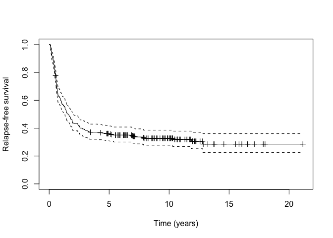
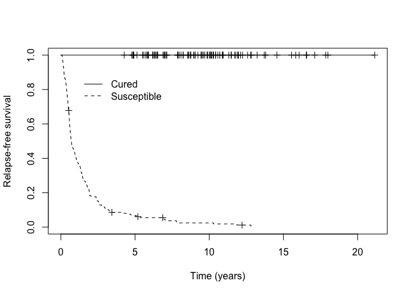
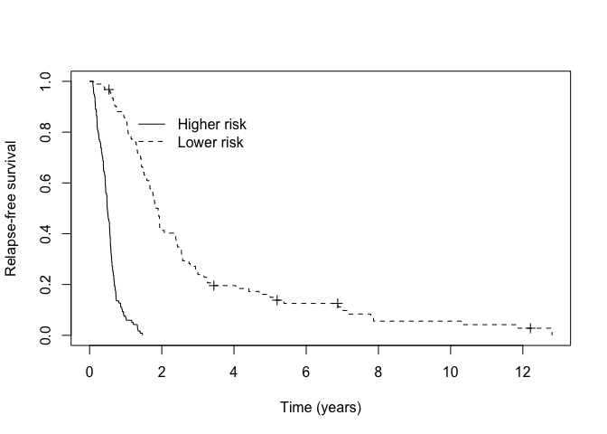

The goal of hdcuremodels is to allow one to fit a penalized mixture cure model (MCM) when there is a high-dimensional covariate space, such as when high-throughput genomic data are used in modeling time-to-event data, when some subjects will not experience the event of interest. Conventionally, we call the subset of subjects who are immune to the event of interest cured while all other subjects are susceptible to the event.
Example
After loading the hdcuremodels and survival packages, load amltrain which includes 306 patients diagnosed with acute myeloid leukemia (AML) who were cytogenetically normal at diagnosis along with time-to-event outcomes: cryr is the duration of complete response (in years), relapse.death is a censoring variable where 1 indicates the patient relapsed or died and 0 indicates the patient was alive at last follow-up. It is of interest to fit a MCM using the expression for 320 transcripts measured using RNA-sequencing as predictor variables.
data(amltrain)We can inspect the Kaplan-Meier survival curve to determine whether a cure fraction seems to be present.

As can be seen from the Kaplan-Meier plot, there is a long-plateau that does not drop down to zero. This may indicate the presence of a cured fraction. We can test the null hypothesis that the cured fraction is zero against the alternative hypothesis that the cured fraction is not zero using the nonzerocure_test function.
nonzerocure_test(km_train)
#> Warning in Surv(object$time, object$n.event): Invalid status value, converted
#> to NA
#> $proportion_susceptible
#> [1] 0.7146919
#>
#> $proportion_cured
#> [1] 0.2853081
#>
#> $p_value
#> [1] "< 0.001"
#>
#> $time_95_percent_of_events
#> [1] 5.553847Given the small p-value we reject the null hypothesis and conclude there is a non-zero cure fraction present. We can also extract the cured fraction as the Kaplan-Meier estimate beyond the last observed event using the cure_estimate function.
cure_estimate(km_train)
#> [1] 0.2853081We now fit a penalized MCM using the E-M algorithm where the penalty parameters for incidence and latency, lambda.inc and lambda.lat were previously determined using cross-validation.
fitem <- cureem(Surv(cryr, relapse.death) ~ .,
data = amltrain,
x_latency = amltrain, model = "cox",
lambda_inc = 0.009993, lambda_lat = 0.02655
)Coefficient estimates can be extracted from the fitted model using the coef for any of these model criteria (“logLik”, “AIC”, “cAIC”, “mAIC”, “BIC”, “mBIC”, “EBIC”) or by specifying the step at which the model is desired by specifying the model_select parameter. For example,
coef_cAIC <- coef(fitem, model_select = "cAIC")Predictions can be extracted at a given step or information criterion (“logLik”, “AIC”, “cAIC”, “mAIC”, “BIC”, “mBIC”, “EBIC”) using the predict function with model_select specified.
train_predict <- predict(fitem, model_select = "cAIC")This returns three objects: p_uncured is the estimated probability of being susceptible (), linear_latency is , while latency_risk applies high risk and low risk labels using zero as the cutpoint from the linear_latency vector. Perhaps we want to apply the 0.5 threshold to p_uncured to create Cured and Susceptible labels.
p_group <- ifelse(train_predict$p_uncured < 0.50, "Cured", "Susceptible")Then we can assess how well our MCM identified patients likely to be cured from those likely to be susceptible visually by examining the Kaplan-Meier curves.

We can assess how well our MCM identified higher versus lower risk patients among those predicted to be susceptible visually by examining the Kaplan-Meier curves.
km_suscept <- survfit(Surv(cryr, relapse.death) ~ train_predict$latency_risk, data = amltrain, subset = (p_group == "Susceptible"))
Of course, we expect our model to perform well on our training data. We can also assess how well our fitted MCM performs using the independent test set amltest. In this case we use the predict function with newdata specified.
test_predict <- predict(fitem, newdata = amltest, model_select = "cAIC")